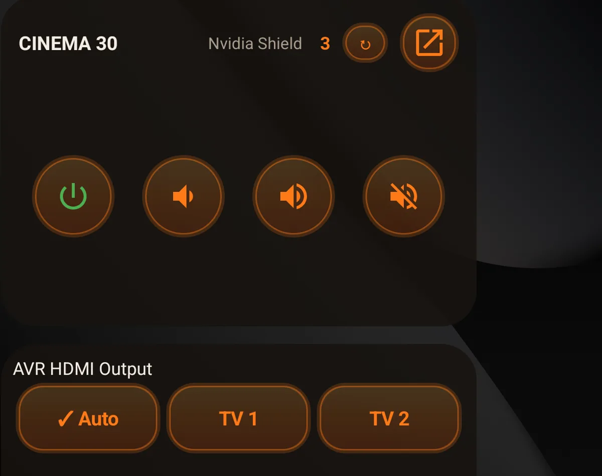
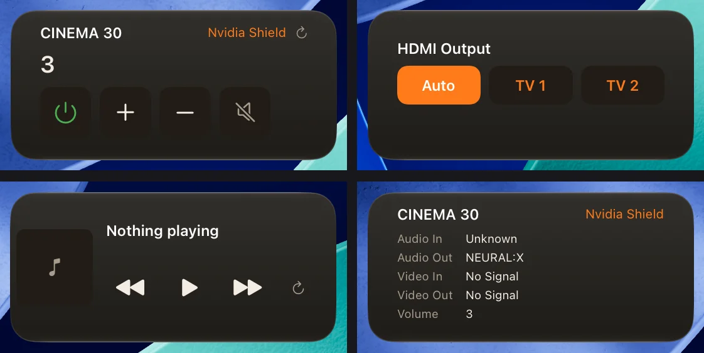

Home › User Guide › Widgets
Android, iPhone and iPad
Home-screen widgets
Control your receiver without opening the app: power, volume and mute, what is playing, the current signal, your Scenes and the HDMI output, right on the home screen. Widgets are available on Android and on iPhone and iPad. Mac and Windows have no widgets.
The six widgets

- Quick Control (Android: AVR Quick Control). Receiver name, input and volume, with power, volume down, volume up and mute. On Android it also has OPEN APP, and while the receiver is off the volume and mute buttons are hidden and only power remains.
- Now Playing (Android: AVR Now Playing). Cover art, title, artist and station, with previous, play or pause and next. When nothing is playing it says No media playing on Android and Nothing playing on iPhone and iPad.
- Receiver Status (Android: AVR Signal Status). The input, the incoming and outgoing audio and video signal, the sample rate and the volume.
- Scenes (Android: AVR Scenes). Your saved Scenes for the receiver. Tap one to apply it without opening the app. See Scenes.
- Multi-Room (Android: Multi-Room). What a pinned speaker or group is playing, with cover art, title and artist, and volume down, previous, play or pause, next and volume up. Pin a speaker or group with Pin to home widget in the app; until you do, the widget says Pin a room in the app. It says Speaker not reachable when the pinned speaker cannot be reached and Nothing playing when it is idle. See Multi-Room.
- HDMI Output (Android: AVR HDMI Output). One button per HDMI output, such as Auto, TV 1 and TV 2, or Monitor 1 and Monitor 2 when that is what your receiver calls them, with the current one marked. Tap one to switch the receiver's HDMI output without opening the app. The widget offers only the outputs the receiver reported when the app last read it, and after each tap it reads the setting back from the receiver before it shows the change. If the receiver does not allow the change right now, it says The receiver does not allow changing this now; until the app has read the setting, it says Open AVR Maestro to read the HDMI output.
The widgets follow the receiver selected in the app. Quick Control and Status show Standby when the receiver is in standby and AVR off when it cannot be reached.
Step by step
Add a widget
- Open AVR Maestro once and connect to your receiver, so the widgets have something to show.
- Touch and hold an empty part of the home screen and choose your phone's widget option.
- Find AVR Maestro and pick a widget. On Android the names start with AVR, apart from Multi-Room. On iPhone and iPad, Quick Control, Now Playing, Receiver Status, Multi-Room and HDMI Output come in the medium size and Scenes in medium or large.
- On Android, drag the widget's edges to resize it. Small sizes switch to a compact layout.
iPhone and iPad widgets need iOS or iPadOS 17 or later.
Keeping widgets up to date
- Refresh button. Quick Control, Now Playing and Scenes have a refresh button that updates the widget straight away, and so does Multi-Room once a speaker or group is pinned. On Android, Now Playing shows it at larger sizes.
- Automatic refresh. Quick Control and Status update on their own about every 15 minutes, and on Android so does Now Playing. On Android this needs a network connection. Scenes updates when you change your Scenes in the app or tap refresh.
On Android, the first time you use widgets the app explains Home-screen widgets and offers Open settings. For the most reliable background updates, allow AVR Maestro to run in the background in your battery settings.
Widget colours
Both settings are in Settings under Look & Feel, on Android, iPhone and iPad.
- High-contrast widgets makes the widgets greyscale.
- Widgets follow app colour uses your Color Theme accent on the widgets instead of the signature orange. While High-contrast widgets is on, this switch is unavailable and the widgets stay greyscale.
Widget Size in the same section does not change the home-screen widgets. It scales buttons, chips and cards inside the app (Small, Medium, Large or Larger). See Settings.
Look, sizes and background opacity
- Widget look. A Look setting under Settings paints every widget light or dark whatever your device theme is. Choose Auto, Light or Dark; on Android Auto is labelled System default. Auto keeps following the device. The Scenes rows follow it too. The setting is part of backup and restore, and it is shown on iPhone and iPad as well as on Android.
- Round glass buttons. On Android, Quick Control power, volume and mute are round glass buttons with a glow ring, evenly spaced across the widget. Now Playing uses the same round glass icon buttons. The glow ring shows in both the light and dark looks. Buttons keep a fixed height when a widget is stretched, so a wide widget does not grow huge buttons. Power, Volume down, Volume up, Mute, Open app and Apply scene are icons instead of words, so they read the same in every language, and each one still announces its name to a screen reader in your language.
- Five sizes. On iPhone and iPad the content scales across five size tiers. On Android, Quick Control scales its round buttons across five size steps as you resize it, and on Android 12 and later Status steps through five sizes, with text that grows with each step by up to 30 percent. Widgets resize in both directions, with rounder cards and buttons and a larger album cover on Now Playing.
- Lock Screen widget. On iPhone and iPad, Status, Quick Control and Now Playing add a rectangular Lock Screen widget.
- Large sizes. On iPhone and iPad, Quick Control, Now Playing and HDMI Output add a large size.
- Widget background opacity. Makes the widget card 100, 75, 50, 25 or 0 percent opaque, so a widget can sit clear over your wallpaper. 100 percent is the default and looks as before. It is a row under Look & Feel in Settings.

Android: the opacity row keeps the five steps. iPhone and iPad: Apple controls widget transparency, so the row explains this and points you to Home Screen Customize, then Clear or Tinted. At opacity 0 the widget text follows the system appearance, so the Light look no longer draws dark text on the system's dark backing.
FAQ
Widgets, answered
Which home-screen widgets does AVR Maestro have?
Six, on Android and iPhone or iPad: Quick Control (power, volume and mute), Now Playing (what is playing, with previous, play or pause and next), Receiver Status on iPhone or Signal Status on Android (input and audio and video signal), Scenes (apply a saved Scene), Multi-Room (what a pinned speaker or group is playing, with playback and volume), and HDMI Output (switch the receiver's HDMI output). There are no widgets on Mac or Windows.
How often do the widgets update?
Quick Control and Status update on their own about every 15 minutes, and on Android Now Playing does too. Quick Control, Now Playing and Scenes also have a refresh button that updates the widget straight away.
Why does my widget say AVR off or Standby?
Standby means the receiver is in standby. AVR off means the widget could not reach the receiver, for example because it is unplugged or on another network.
Why does the Scenes widget say there are no scenes?
The widget lists the Scenes saved for the selected receiver. Open AVR Maestro and create a Scene first, see the Scenes guide.
Does Widget Size change the home-screen widgets?
No. Settings › Widget Size changes the size of buttons, chips and cards inside the app. To change a home-screen widget's size, resize it on the home screen.
Can the widgets use my theme colour?
Yes. Turn on Settings › Widgets follow app colour and the widgets use your accent colour instead of orange. It is not available while High-contrast widgets is on, because those widgets are greyscale.
More of the guide
Other AVR Maestro guides
Getting started · Manage receivers · Navigating the app · Search · Home Screen · Volume Controls · Remote · Zones · Now Playing · Radio (FM/AM) · Scenes · Sound · Graphic EQ · Speakers · Why a control is locked · Settings · Custom Icons · On-Screen Display · Languages · The Assistant · Home Automation · Home Assistant dashboard · Backup & Restore · Glossary